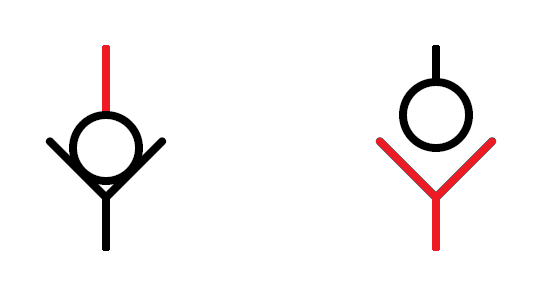
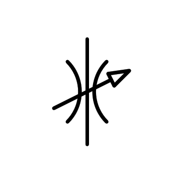
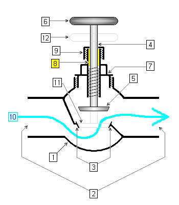
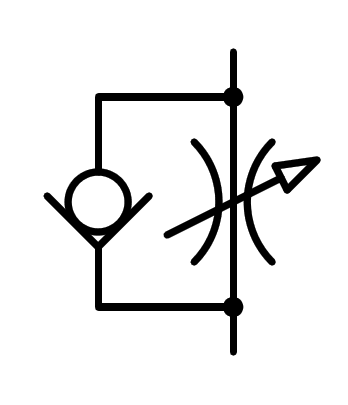
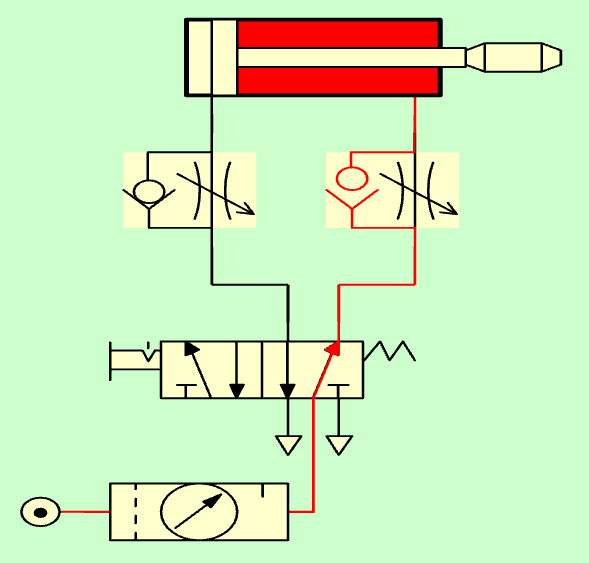
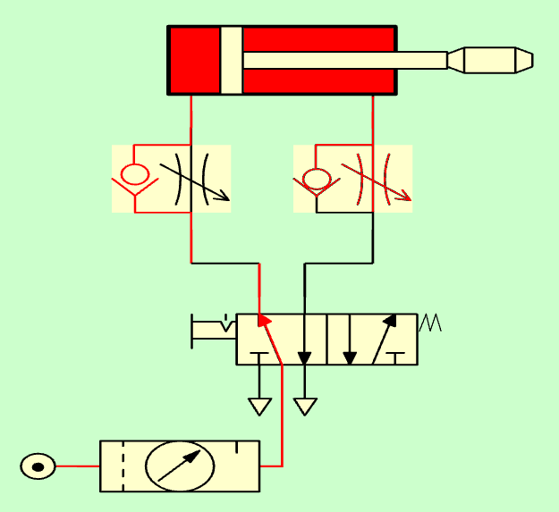
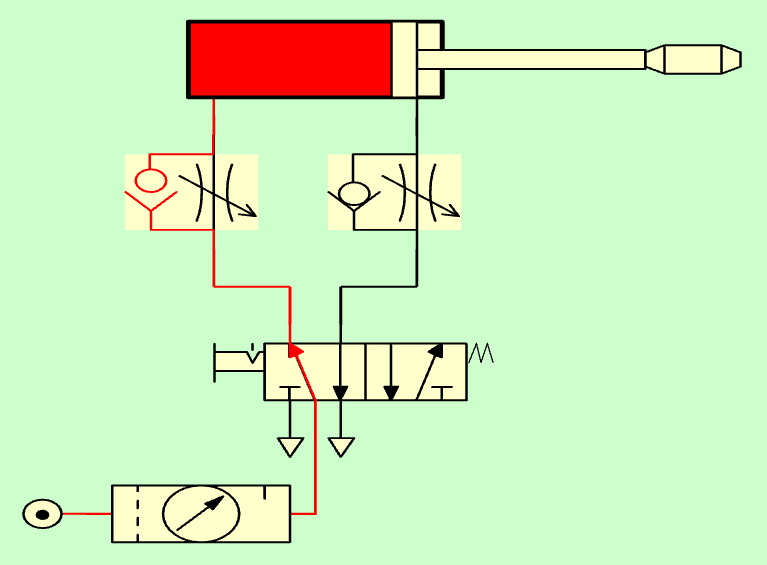

7. La vàlvula anti -retrobament¶
Una vàlvula antirretorne, també anomenada vàlvula de retenció, té la tasca de permetre que l’aire pressió en una direcció i tallant completament el pas de la pressió en sentit contrari.
La seva posició sol ser la que apareix en els símbols següents, de manera que aquestes vàlvules permeten la circulació de l’aire cap a la pressió cap amunt i talleu el pas de l’aire a la pressió cap avall:
{kind=link}

Els símbols anti -retrobs tancats i oberts.¶
La construcció interna d’aquestes vàlvules es pot fer amb una esfera i un con com el d’un embut en el qual s’ajusta l’esfera.
Quan l’aire a pressió arriba des de dalt, l’esfera és enclava a l’embut gràcies a la pressió de la molla i l’aire a la pressió. En aquesta posició, l'esfera no permet el pas de l'aire cap avall:

Vàlvula anti -retrobament tancada.¶
Quan la pressió a la pressió prové de baix, l’esfera s’eleva a través de la pressió de l’aire (molt més gran que la força del moll) permetent l’aire a la pressió per circular cap amunt:
{kind=link}
La vàlvula estrangativa¶
Aquesta vàlvula, també anomenada regulació del cabal, és una vàlvula que tanca parcialment el pas aire -air per deixar que només circuli una part de tot el flux d’aire.
La seva funció és la mateixa que té una aixeta d’aigua, que permet controlar el raig d’aigua amb un flux més gran o menor, però que s’aplica a l’aire a pressió.
{kind=link}

Símbol d’un estrangalador o vàlvula reguladora de flux.¶
Internament, la vàlvula està constituïda per un cargol que aporta una tapa a l’obertura de l’aire a pressió. Com més a prop és la tapa d’obertura, menys flux d’aire permetrà passar.
{kind=link}

Visió interna d’una vàlvula estrangativa o reguladora del flux.¶
Vàlvula estranguradora unidireccional¶
Aquesta vàlvula està formada per les dues vàlvules anteriors en paral·lel. La seva funció és donar un pas lliure d’aire sota pressió en un sentit i estrangular el pas de l’aire a pressió en el sentit contrari.
{kind=link}

Símbol d’una vàlvula d’estrànguador unidireccional.¶
Aquesta vàlvula s’utilitza normalment per deixar l’aire a l’aire a pressió que arriba des de la vàlvula fins al cilindre i per estrangular la fugida de l’aire del cilindre a la vàlvula.
Pistó de doble efecte amb velocitat regulada¶
Els pistons pneumàtics se solen moure a velocitats ràpides, la mateixa velocitat de l’aire ràpida en entrar i deixar les càmeres del pistó.
De vegades és necessari reduir la velocitat del pistó per evitar accidents o empenta massa agressius. Per exemple, el pistó d’obertura i tancament d’una porta d’autocar ha de tenir una velocitat lenta per no colpejar cap passatger.
Per aconseguir l'efecte de moviment lent del pistó, es poden seguir dos esquemes diferents:
** Estranyeu l’entrada de l’aire al pistó i deixeu la fugida lliure. **
Aquest esquema dóna problemes perquè l’aire s’entra gradualment al pistó i genera pressió fins que el pistó es mogui a les trompetes. El moviment no és fluid i el pistó té poca força en el seu moviment.
** Estranyeu la sortida d’aire a l’escapament i deixeu que l’aire en pressió al pistó sense estrangulament. **
Aquest és l’esquema que s’utilitza a la pràctica perquè fa que el moviment del pistó es realitzi suaument, sense donar trompetes i amb tota la força del cilindre.
{kind=link}

Pistó de doble efecte amb estrangaladors d’escapament.¶
Funcionament de velocitat regulat¶
Al principi, el cilindre està en repòs amb la descendència de dins. La cambra d’aire dreta està plena de resistència a l’aire de pressió de manera que la tija roman dins del cilindre.
Pistó d’efecte doble amb tija a l’interior.¶
A continuació, la vàlvula 5/2 està operada i l’aire comença a pressió a la cambra esquerra del cilindre. Aquesta entrada d'aire no s'estranguen, de manera que entra amb tota la velocitat possible.
A la cambra dreta del cilindre, encara hi ha aire -pressió, que surt a l'escapament a través de l'estrany, de manera que aquesta càmera es buidarà lentament.
{kind=link}

Pistó d’efecte de doble efecte amb canya que surt regulada.¶
Aquest lent buidatge de la càmera dreta és el que produeix un moviment lent des de la vareta a la dreta.
Tenint pressió sobre les dues cambres d’aire, el pistó és sense llibertat de moure’s fora de la posició que correspon. Així que si intentem moure el pistó amb la mà, trobarem que continua movent -se lentament sense alterar la seva ruta.
Finalment, la càmera dreta es buidarà a tot aire i la descendència serà alliberada a tota la seva ruta.
{kind=link}

Pistó de doble efecte amb vareta fora del cilindre.¶
Exercicis¶
Dibuixa el símbol d’una vàlvula de restauració en repòs.
Descriviu el funcionament d’un anti -retrocés.
Dibuixa l’interior de la vàlvula quan dóna pas a l’aire sota pressió.
Dibuixeu el símbol d’una vàlvula estrangativa.
Descriviu el funcionament d’una vàlvula estrangativa. Per a què serveix aquesta vàlvula?
Dibuixa el símbol d’una vàlvula d’estrànguador unidireccional.
Descriviu el funcionament d’una vàlvula d’estrangalador unidireccional.
Dibuixa l’esquema d’un cilindre d’efecte doble amb la sortida i la velocitat d’entrada de la tija regulada.
Simula el funcionament del circuit anterior.
Expliqueu el funcionament del circuit anterior. Per què la tija es mou lentament?
Dibuixa un esquema pneumàtic d’un cilindre de doble efecte que ha regulat la velocitat de sortida de la tija, però deixa que la descendència entri a la velocitat màxima.